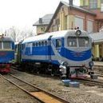
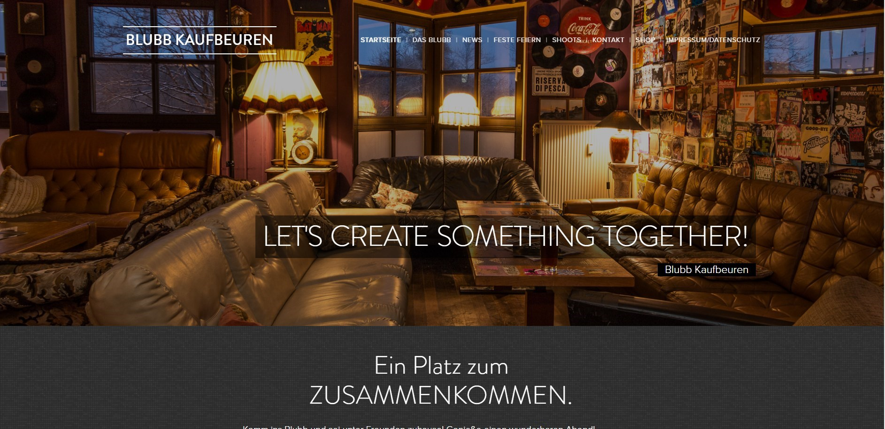
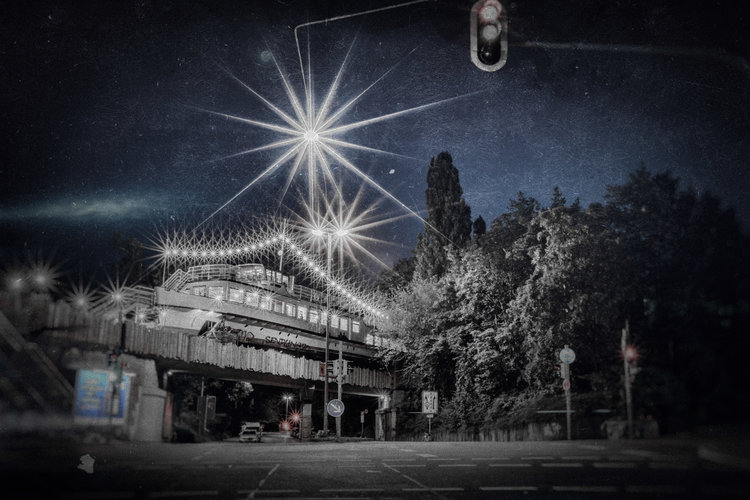
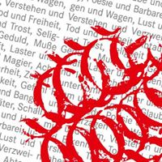
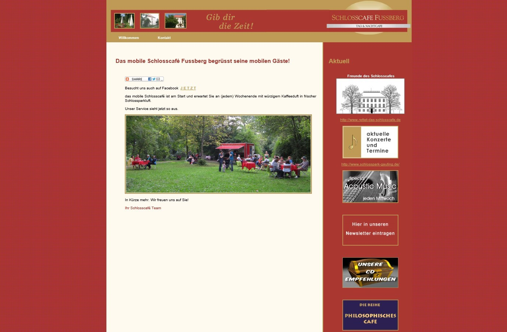
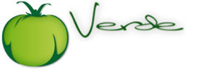

Little Butterfly ...
| Date | Concert | Where? |
|---|---|---|
| 12.05.2019, 19:00 Uhr | Salon Irkutsk Mira Cardui Solo |
 |
| 29.05.2019, 19:00 Uhr | Weinbar Genussreich, Grafing, Mira Cardui Solo |

|
| 06.06.2019, 20:00 Uhr | Pasinger Fabrik, kleine Bühne | |
| 26.02.2020, 20:00 Uhr | Spectacel Inning |
Past Concerts
| 18.04.2019, 18:00 Uhr | Cafe Regenbogen, Haar, Mira Cardui Solo |
|
| 10.02.2019, 19:00 Uhr | Freies Musikzentrum München, All that Music, Mira Cardui solo |
|
| 07.02.2019, 19:00 Uhr | Theater Drehleier, Munich Song Connection (Song Slam), Mira Cardui solo |
|
| 26.01.2019, 19:00 Uhr | Weinbar Genussreich, Grafing, Mira Cardui Solo |
|
| Termin verschoben wegen Renovierungsarbeiten |
Blubb, Kaufbeuren
Mira Cardui Solo |
 |
| 07.12.2018, 20:30 Uhr | Alte Utting, Sternenflotte
Mira Cardui Solo |
 |
| 07.12.2018, 18:00 Uhr | Hugendubel Lesebühne am Stachus, Mixed Show
Mira Cardui Solo |
 |
| 30.11.2018, 20:00 Uhr | Live im Lihotzky
Mira Cardui Solo |
|
| 28.11.2018, 20:00 Uhr | Schlosscafe Gauting
Mira Cardui Solo |
 |
| 14.10.2018, 20:00 Uhr | Restaurant Verde, Prien
mit Stephan Kramer (git.), Garry Todd (bass) |
 |
| 20.07.2018, 18:00 Uhr | Terrasse Bergfischer, Stemmerhof München
Mira Cardui Solo |
|
| 11.07.2018, 18:30 Uhr | Happingersee, Seestraße 49, 83026 Rosenheim
Mira Cardui Solo |

|
| 27.06.2018, 20:00 Uhr | Spectacel Inning
mit Stephan Kramer (git.), Garry Todd (bass), Dominik Scholz (drums) |
|
| 26.06.2018, 20:00 Uhr | Pasinger Fabrik, kleine Bühne
mit Stephan Kramer (git.), Garry Todd (bass), Dominik Scholz (drums) |
|
| 23.06.2018 | Privatkonzert | |
| 16.06.2018, 15:00 Uhr | Happingersee, Seestraße 49, 83026 Rosenheim
Mira Cardui Trio |
|
| 11.05.2018, 20 Uhr | Gasthaus Saxenhammer, Hechenwang
mit Georg Hesse (git.), Jürgen Junggeburth (bass), Thomas Kleinhans (drums) |

|
| 05.04.2018, 21 Uhr | Mr B.'s
mit Georg Hesse (git.) und Jürgen Junggeburth (bass) |
|
| 18.02.2017, 11:30 Uhr | Il Cielo / Plonner Hof, Weßling Duo mit Ashok Ponnou |
|
| 11.02.2018, 20 Uhr | Restaurant Verde, Prien Duo mit Stephan Kramer |
|
| 04.02.2018, 19 Uhr | Freies Musikzentrum München, All that Music, Mira Cardui solo |
|
| 03.02.2018, 20:30 Uhr | Gasthaus "Zum Dülfer" Mira Cardui Duo mit Stephan Kramer |

|
| 11.01.2018, 18:00-20:00 Uhr | Cafe Regenbogen, Haar, Mira Cardui Solo / Doppelkonzert mit Bob Eberl |
|
| 14.11.2017 | Arts 'n' Boards, Mira Cardui solo |
|
| 07.11.2017 | Mira Cardui solo |
|
| 06.11.2017 | ISEMUC im Heppel&Ettlich, Mira Cardui solo |

|
| 20.10.2017 | Bella Martha, Mira Cardui Solo | |
| 23.09.2017, 19:00 Uhr | Weinbar Genussreich, Grafing |
|
| 22.09.2017, 20:00 Uhr | Ars Musica, Stemmerhof München | |
| 29.07.2017, 15:00 Uhr | Happingersee, Seestraße 49, 83026 Rosenheim |
|
| 28.07.2017 | Freies Musikzentrum München, All that Music, Mira Cardui solo |
|
| 21.07.2017 | Ars Musica, Doppelkonzert Mira Cardui & Band / Duo Eilert & Jakubik | |
| 11.07.2017 | Arts 'n' Boards, Mira Cardui solo |
|
| 06.07.2017 | Jardin du Mini Golf (Saint-Martin-d’Ardèche), Mira Cardui solo im Rahmen eines Konzerts mit Canito Grupo | |
| 30.06.2017 | Bella Martha | |
| 07.06.2017 | Spectacel Inning, im Rahmen des Musikerstammtischs | |
| 25.05.2017 | Kyeso | |
| 20.05.2017, 18:00 Uhr | Il Plonner, Weßling | |
| 05.05.2017 | Bella Martha, Offene Bühne | |
| 22.04.2017 | Privatkonzert | |
| 17.04.2017 | ISEMUC im Heppel&Ettlich, Mira Cardui solo |
|
| 06.04.2017 | Mr B.'s | |
| 16.02.2017 | Kyeso | |
| 12.02.2017 | Freies Musikzentrum München, All that Music, Mira Cardui solo |
|
| 07.02.2017 | Arts 'n' Boards |
|
| 16.1.2017 | Heppel&Ettlich |
|
| 10.01.2017 | Arts 'n' Boards |
|
| 13.12.2016 | Arts 'n' Boards |
|
| 25./26.07.2016 | Videoproduktion La Vie en Rose | Studio Weßling |
| 15.07.2016 | Freies Musikzentrum München | |
| 25.06.2016 | Open Air in The Garden | Ruhrgebiet |
| 11.05.2016 | Spektakel Inning Trop Sensible, Gitarre und Gesang |
Inning |
| 08.05.2016 | Freies Musikzentrum München | |
| 23.04.2016 | Concert & Jam Session in the Villa | Weßling |
| 28.02.2016 | Concert in the Villa | Weßling |
| 30.01.2016 | Freies Musikzentrum München, New Talents on Stage |
|
| Dezember 2015 | Freies Musikzentrum München, Trop Sensible, Gitarre und Gesang |
|
| Februar 2015 | Freies Musikzentrum München, New Talents on Stage |